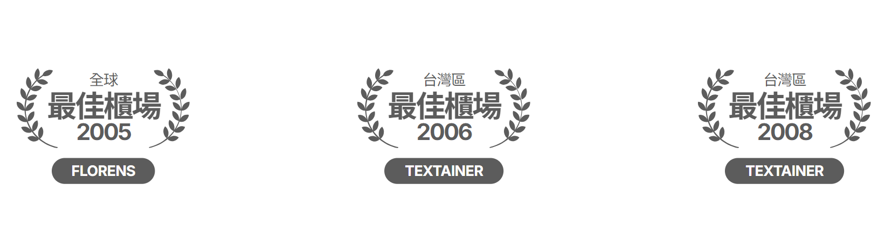
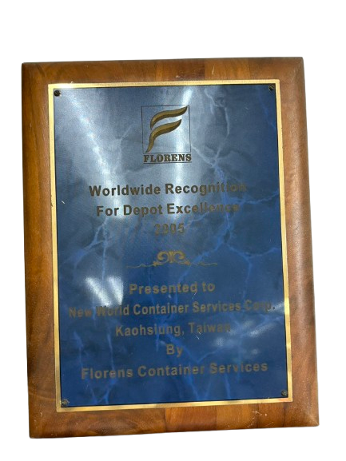
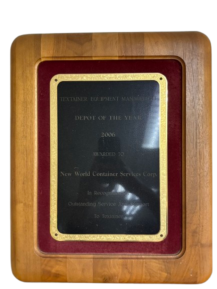
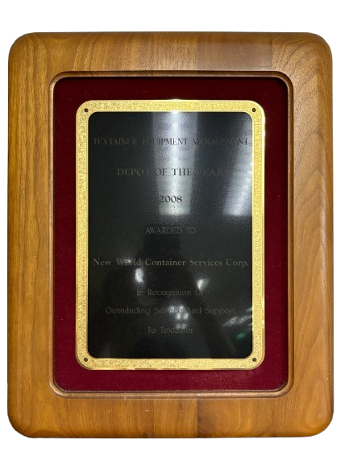
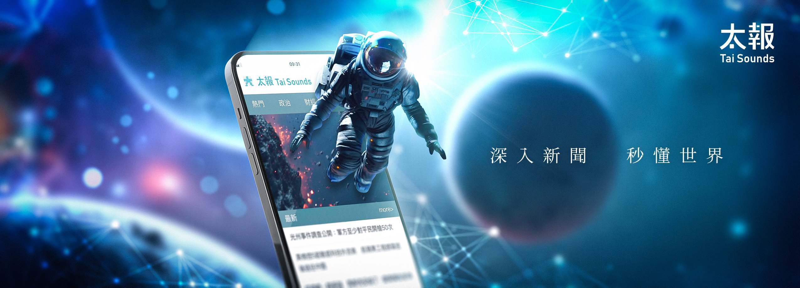

世新貨櫃
成立於1986年，主力於空櫃儲轉及貨櫃維修清洗服務。擁有優質的空櫃儲放管理系統，累積經驗豐富的驗櫃技術和維修專業團隊，卓越的業績和專業的服務，世新貨櫃多次獲得全球最佳櫃場之殊榮。


服務項目
- 貨櫃之修理與保養業務
- 貨櫃之噴砂、除銹、噴漆、清洗業務
- 貨櫃車架之整修
- 其他與貨櫃修理有關業務之經營
服務品質肯定



成立於1986年，主力於空櫃儲轉及貨櫃維修清洗服務。擁有優質的空櫃儲放管理系統，累積經驗豐富的驗櫃技術和維修專業團隊，卓越的業績和專業的服務，世新貨櫃多次獲得全球最佳櫃場之殊榮。




2001年起，亞太事業跨足油品市場，並成功開設第一座加油站「亞柏小港站」，更曾締造全台柴油發油量之冠。2016年正式成立「亞柏油品事業股份有限公司」，除了油品銷售外，亞柏油品持續朝多元化的服務方向發展。近年來，我們更以友善環境和綠能永續的概念，積極在全台設立新站點，其中綠能加油站「亞柏西螺站」於2022年正式啟用。
亞柏油品將繼續致力於提供優質的油品銷售及多元化的服務，以綠能永續為目標，秉持著友善環境的理念，為客戶提供更便利、更可持續的能源服務體驗。
點擊地圖上的服務據點，即可查看各站資訊

亞太員工是公司最重要的資產，因此員工福利一直是公司極為重視的一環，同時也將作為亞柏羽球隊的訓練基地。為此，2011年員工綜合運動休閒中心啟用，正式命名為「亞柏會舘」。 亞柏會舘除了為亞太公司及關係企業的員工及其親友提供休閒、娛樂和社交聯誼的場所外，也開放給社會各界舉辦文化、展覽、羽球比賽等活動使用。我們期望這個綜合運動休閒中心能夠成為員工和社區的一個重要場所，為大家帶來更多的歡樂和交流的機會。
2009年，亞太國際物流集團正式揮拍進軍羽壇，是民間企業所成立的第一支專業羽球隊。我們致力於年輕球員的培育，12年來我們的青年好手到全球爭戰，締造了亞運男子團體銅牌，亞洲青少年男子單打二屆冠軍及多項國內外羽球大賽的金牌殊榮。

深入新聞，秒懂台灣，秒懂全世界
太報於2017年誕生，2018年正式登記成立太報文化事業股份有限公司，以跳脫傳統台灣新聞媒體的框架為初衷，旨在替社會發聲並帶來人文溫度。 太報堅持公正的報導立場，不偏袒任何政黨或利益團體，不設立先入為主的框架，提供最正確的信息和真相，也秉持新聞專業責任，將《太報 TaiSounds》打造成不僅僅是一個新聞媒體，而是一個讀者深具信賴的新媒體平台。追求以深度、解釋性的視角進行報導，無論是在台灣或國際上的即時新聞、政治財經、社會議題、體育與文化娛樂。
45年港口機具保養維修經驗，代理振華柴油堆高機、電動堆高機、電動拖車、陜汽重卡、各式零組件、板台、特殊大型機具銷售及保固維修服務。